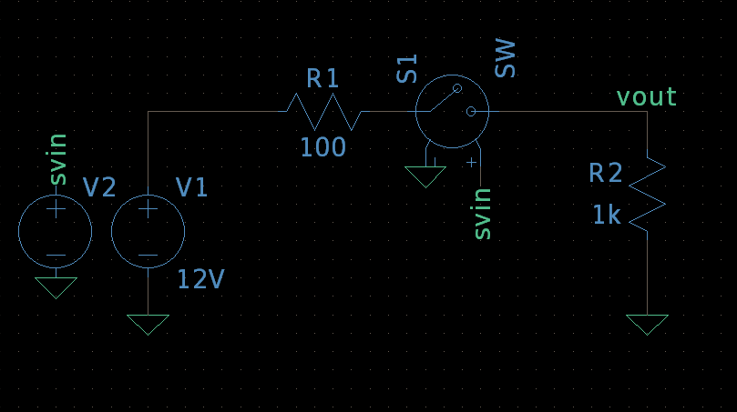
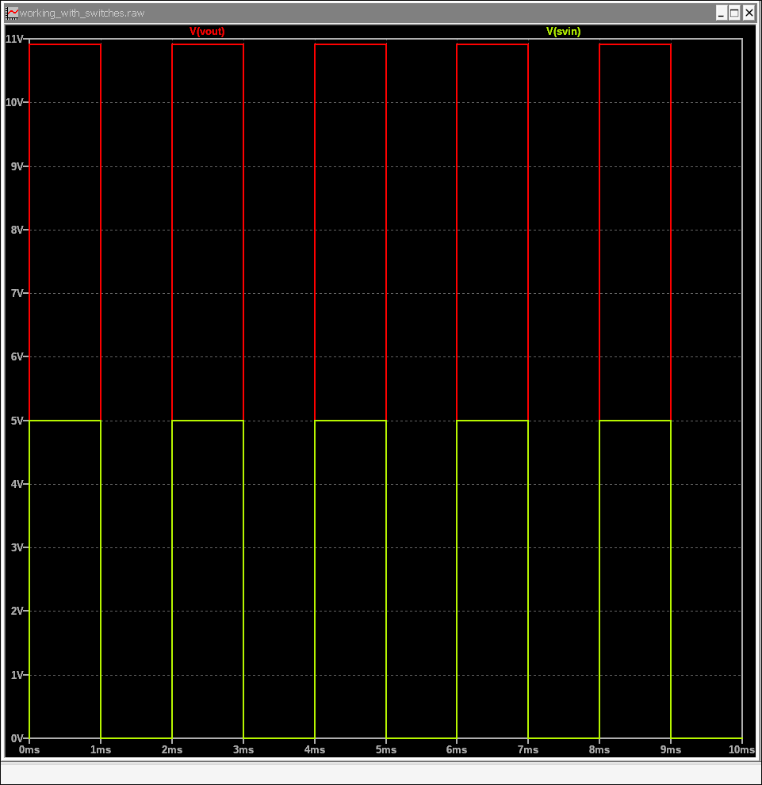

9. Advanced: Using Voltage-Controlled Switches
Switches are a powerful tool in LTSpice for simulating digital logic, power converters, or circuits that change state over time. A voltage-controlled switch is a fundamental type of switch that opens or closes based on the voltage across a control port. In this tutorial, we will set up and simulate a simple circuit that uses a voltage-controlled switch to turn a load on and off.
9.1 Setting Up the Switch Circuit
Let's build a circuit where a 12V DC source powers a load resistor (R2), and a switch, controlled by a separate pulse signal, connects or disconnects the load.
- New Schematic: Open a new schematic (File > New Schematic).
- Place Components:
- Add two voltage sources (voltage):
- One for the power supply, V1. Right-click and set DC value to 12V.
- One for the control signal, V2. Right-click and select Advanced. Choose PULSE and set the following parameters:
- V_initial: 0V
- V_on: 5V
- T_on: 1n (1 nanosecond)
- T_rise: 1u (1 microsecond)
- T_fall: 1u (1 microsecond)
- T_on: 1m (1 millisecond)
- T_period: 2m (2 milliseconds)
- Add two resistors (res):
- An optional current-limiting resistor, R1 (e.g., 100).
- The load resistor, R2 (e.g., 1k).
- Add the Switch: Go to Component (or press P), and type SW to find the voltage-controlled switch symbol. Place it on the schematic.
- Add two voltage sources (voltage):
- Wire the Circuit:
- Connect the positive terminal of V1 to R1.
- Connect R1 to one of the switch terminals.
- Connect the other switch terminal to R2.
- Connect R2 back to the ground.
- Connect the negative terminal of V1 to the ground.
- Connect the control signal, V2, across the switch's two control terminals. The control terminals are the two lines perpendicular to the main switch line. Precisely, connect the V2 to the positive of the control terminal, and connect the other control terminal to the ground.
- Connect the negative terminal of V2 to the ground.
- Save: Save your schematic (e.g., switch_control.asc).
Your schematic should look similar to this:
9.2 Configuring the Switch Model
The generic switch (SW) needs to be configured with a model to define its behavior. We'll use a .model directive to do this.
- Add a SPICE Directive: On your schematic, go to Edit > SPICE Directive (or press ".").
- Define the Switch Model: In the dialog box, type the following:
Here's a breakdown of the parameters:.model S_ideal SW(Vt=2 Vh=0.5 Ron=1m Roff=1G)- S_ideal: The name of our switch model.
- SW: Declares this as a switch model.
- Vt=2: The threshold voltage. The switch turns on when the control voltage is above this value (2V).
- Vh=0.5: The hysteresis voltage. The switch turns off when the control voltage drops below (Vt - Vh), which is 1.5V in this case.
- Ron=1m: The on resistance (1mΩ).
- Roff=1G: The off resistance (1GΩ).
- Associate the Model: Right-click on the switch (SW) symbol on the schematic. In the dialog box, set the Value field to the model name, S_ideal.
9.3 Configuring and Running the Simulation
We'll use a Transient Analysis to see the switch's effect over time.
- Set Simulation: Go to Simulate > Configure Analysis and select the Transient tab.
- Set Stop Time to 10m (10 milliseconds), which is enough to see a few cycles of our 2ms period pulse signal.
- Click OK and place the .tran directive on your schematic.
- Run Simulation: Go to Simulate > Run or press the Play icon.
9.4 Analyzing the Waveforms
The plot window will open. Probe the following nodes:
- The control voltage (V2) to see when the switch is commanded on.
- The output voltage across the load resistor (R2).
You will observe a clear correlation between the two signals. When the control voltage (the yellowish one in the plot) is high (5V), the switch is closed, and the output voltage (the red one) across the load will be approximately 12V (minus a small voltage drop due to Ron and R1). When the control voltage is low (0V), the switch is open, and the output voltage drops to near zero.
This simple simulation demonstrates how a voltage-controlled switch can be used to chop or modulate a signal based on a separate control input, a fundamental principle in fields like power electronics and digital communication.